Dokumen Alur Transaksi
Swim Private Hub — https://www.swimprivatehub.biz.id
1. Ringkasan Bisnis dan Produk
| Nama merchant (Midtrans) | Swim Private Hub |
|---|
| Website | https://www.swimprivatehub.biz.id |
|---|
| Jenis usaha | Platform pemesanan les renang privat. Orang tua atau peserta membeli paket sesi les, lalu memesan jadwal dengan coach di kolam renang mitra. |
|---|
| Produk yang dijual | Paket sesi les renang privat, misalnya Private 4x (4 sesi, berlaku 30 hari, Rp400.000) dan Private 8x (8 sesi, berlaku 60 hari, Rp750.000 di Kolam Renang Melati atau Rp900.000 di Kolam Renang Tirta Asri). Setiap paket memiliki jatah pembatalan. |
|---|
| Metode integrasi Midtrans | Snap (halaman pembayaran Midtrans, mode redirect) dengan notifikasi HTTP (webhook) dari Midtrans. Pencairan dana ke coach dan kolam mitra dijelaskan pada bagian 4, dan pengajuan layanan Payouts pada bagian 5. |
|---|
| Alamat | Perumahan Rantau Indah Residence City, Blok F2 No. 3, Bojong, Karangtengah, Cianjur, 43281 |
|---|
| Kontak | hello@swimprivatehub.biz.id · WhatsApp +62 821-1717-3124 |
|---|
2. Alur dari Pemilihan Produk sampai Checkout dengan Midtrans
1Beranda
Calon pengguna membuka beranda untuk melihat layanan, kolam mitra, coach, cara kerja, dan FAQ. Tombol
Daftar dan
Masuk tersedia di pojok kanan atas.
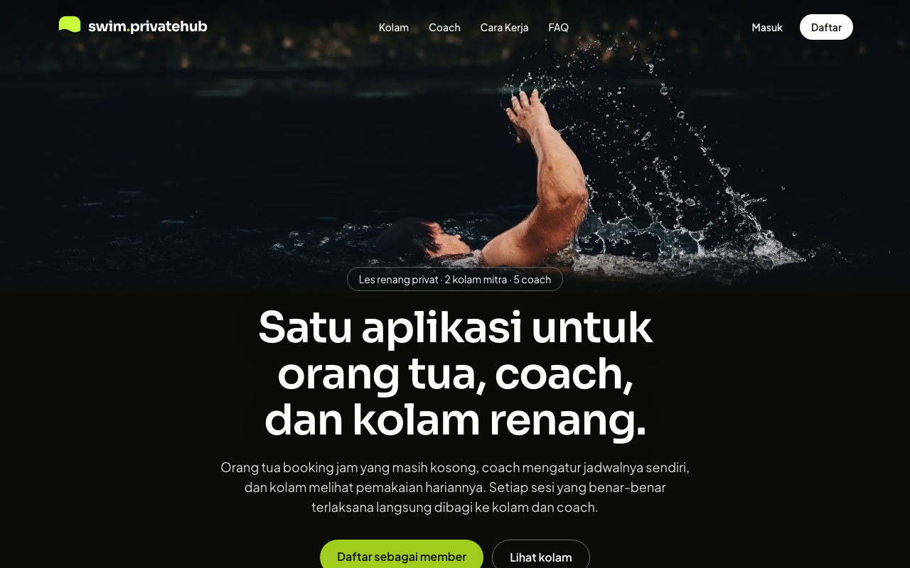
2Masuk atau daftar akun
Pembeli masuk dengan No HP atau email dan password. Pengguna baru mendaftar lewat tautan
Daftar.
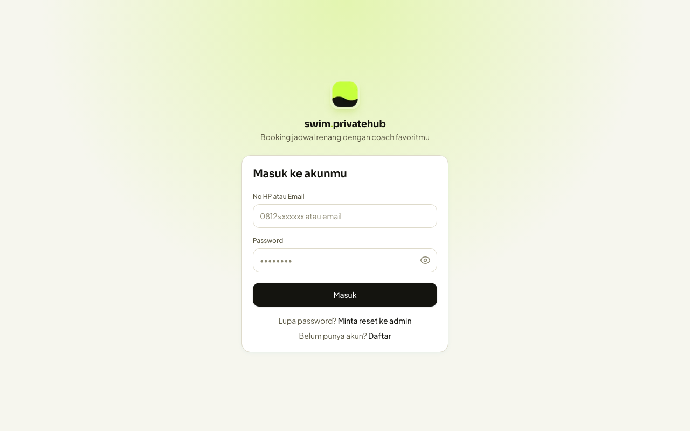
3Dashboard member
Setelah masuk, member melihat dashboard dengan menu Booking, Cari Coach, Riwayat, Paket, Riwayat Bayar, dan Peserta.
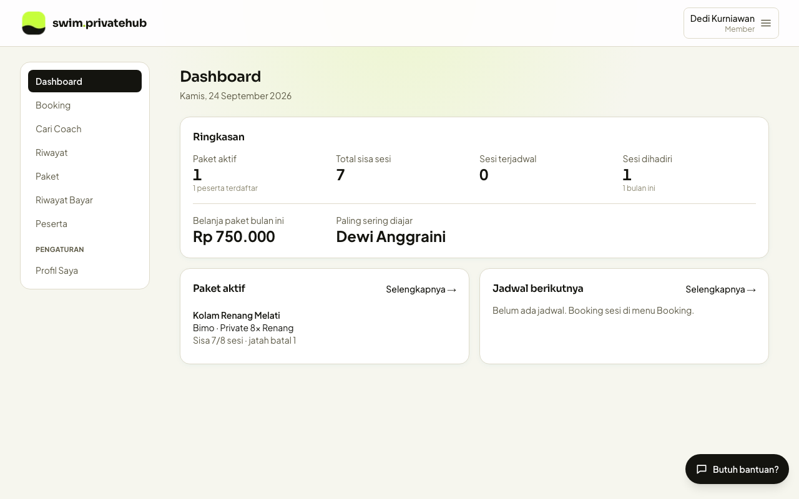
4Memilih produk (paket) dan peserta
Pada menu
Paket, bagian
Beli Paket Baru menampilkan paket per kolam lengkap dengan harga, harga per sesi, jumlah sesi, masa berlaku, dan jatah batal. Pembeli memilih peserta (diri sendiri atau anak) pada dropdown, lalu menekan tombol
Beli.
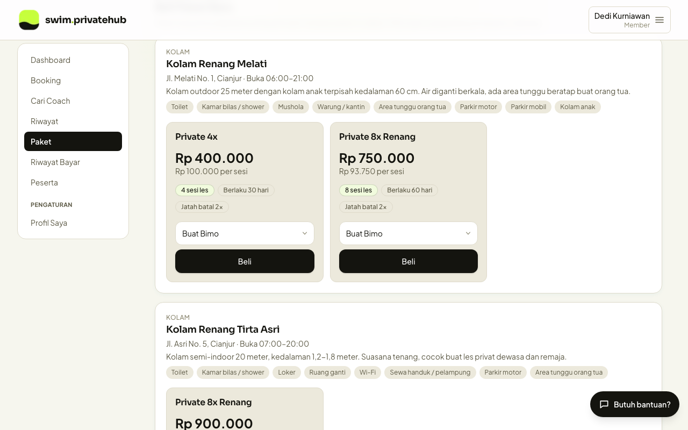
5Checkout dengan Midtrans
Setelah menekan
Beli, sistem membuat transaksi pada server (order ID berformat
PKG-...) dan meminta token pembayaran ke Midtrans Snap. Pembeli diarahkan ke halaman pembayaran Midtrans, yang menampilkan total tagihan, order ID, batas waktu pembayaran, dan daftar metode pembayaran. Pembeli memilih metode dan menyelesaikan pembayaran di halaman Midtrans.
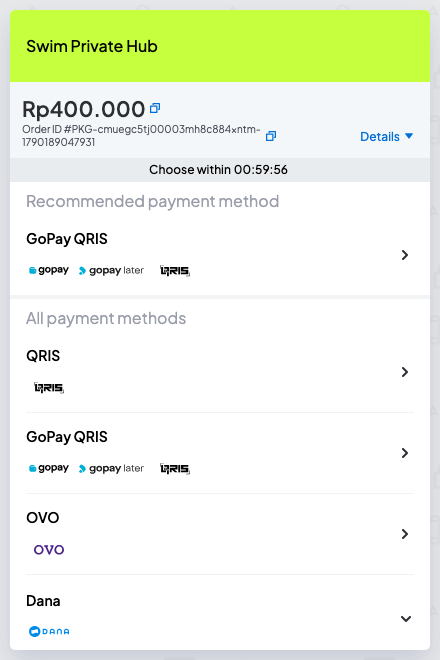
Screenshot halaman Midtrans di atas diambil dari lingkungan Production Midtrans. Transaksi contoh ini tidak dibayar dan kedaluwarsa otomatis.
6Kembali ke situs setelah pembayaran
Midtrans mengarahkan pembeli kembali ke situs (halaman finish) sesuai status transaksi. Berikut tampilan untuk status
settlement (berhasil) dan
pending (menunggu pembayaran, misalnya virtual account). Pembayaran yang dibatalkan atau gagal diarahkan ke halaman "Pembayaran Belum Selesai".
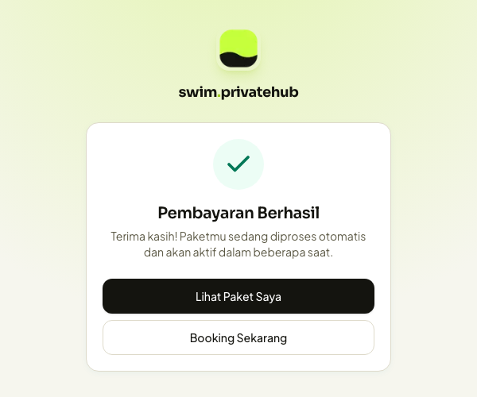
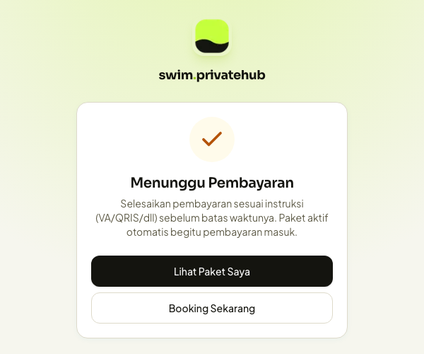
7Status pembayaran di Riwayat Bayar
Status pembayaran yang sebenarnya diperbarui otomatis oleh notifikasi HTTP dari Midtrans, bukan oleh halaman di browser pembeli. Pembeli dapat melihat status pada menu
Riwayat Bayar:
Menunggu pembayaran sebelum dibayar, dan
Berhasil setelah Midtrans mengirim notifikasi settlement. Paket menjadi aktif otomatis setelah pembayaran berhasil.
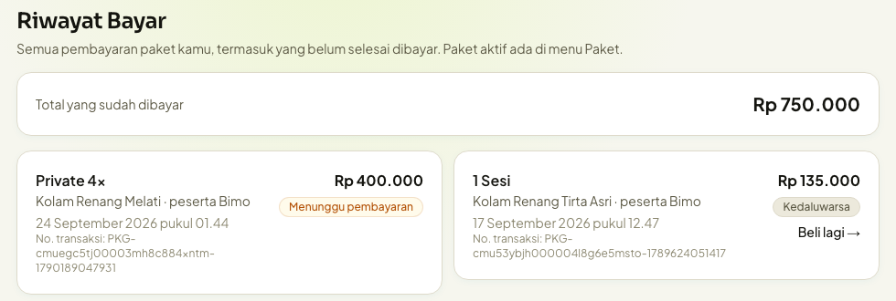
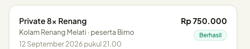
Data pada screenshot adalah data uji internal.
8Memesan jadwal dengan paket yang sudah aktif
Setelah paket aktif, member memilih peserta, kolam, dan tanggal pada menu
Booking, lalu memesan jam yang tersedia dengan coach. Setiap sesi yang dipesan memotong sisa sesi pada paket.
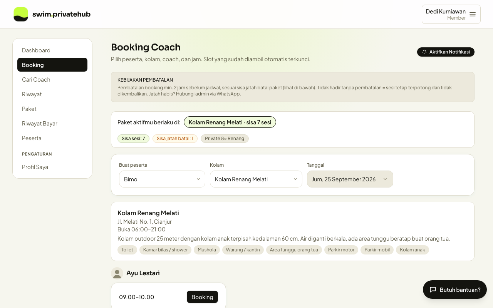
3. Integrasi Teknis dengan Midtrans
- Pembuatan transaksi: server memvalidasi paket, peserta, dan harga, menyimpan transaksi berstatus menunggu pembayaran, lalu memanggil Midtrans Snap untuk mendapatkan halaman pembayaran.
- URL kembali: selesai
/pembayaran/sukses, belum selesai /pembayaran/gagal.
- Notifikasi HTTP: Midtrans mengirim status transaksi ke
https://www.swimprivatehub.biz.id/api/payment/webhook. Server memverifikasi tanda tangan (signature key, SHA-512) sebelum memproses.
- Pemetaan status:
settlement (atau capture dengan fraud status accept) mengaktifkan paket; pending tetap menunggu; deny dan cancel menggagalkan transaksi; expire menandai transaksi kedaluwarsa. Transaksi kartu dengan fraud status challenge ditahan sampai ada keputusan.
- Perlindungan duplikat: notifikasi yang datang berulang tidak mengaktifkan atau mengkredit paket dua kali.
4. Pencairan Dana ke Coach dan Kolam Mitra
Model aliran dana. Seluruh pembayaran member diterima pada satu akun merchant Midtrans. Dana tidak langsung dibagi saat pembayaran. Setelah sebuah sesi ditandai Hadir, sistem mencatat bagian masing-masing pihak (coach, kolam mitra, dan platform) sesuai persentase bagi hasil ke saldo internal, dan komisi platform sudah dipisahkan dari PPN 12%. Coach dan kolam mitra kemudian mengajukan pencairan saldo mereka ke rekening bank sendiri.
ACoach atau kolam mengisi rekening dan mengajukan pencairan
Pada menu
Saldo, coach atau pemilik kolam mengisi rekening tujuan (nama bank, nomor rekening, nama pemilik rekening), lalu mengajukan pencairan dengan nominal minimal Rp50.000. Nominal yang diajukan langsung dipisahkan dari saldo yang bisa dicairkan dan tampil sebagai
Dalam proses pencairan dengan status
Menunggu diproses.
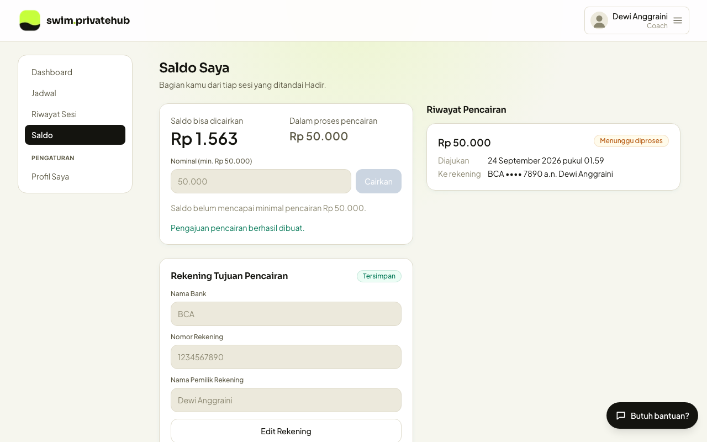
Data rekening dan nominal pada screenshot adalah data uji internal.
BAdmin memeriksa dan memproses pengajuan
Admin melihat pengajuan pada halaman
Pencairan Saldo (pemilik saldo, nominal, rekening tujuan, waktu pengajuan), lalu memprosesnya. Saat ini pemrosesan dilakukan dengan transfer manual oleh admin, kemudian pengajuan ditandai
Dibayar. Admin juga dapat
Menolak pengajuan.
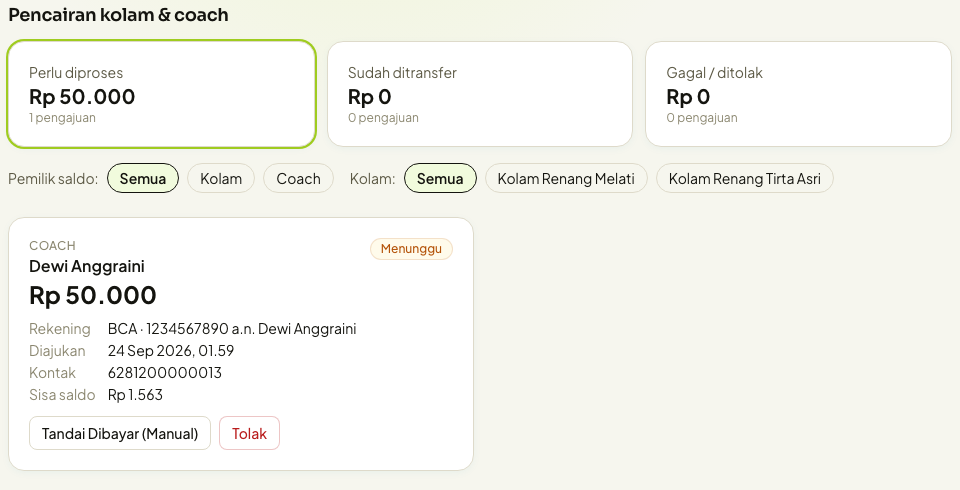
- Alur status: Menunggu, Diproses, Dibayar, atau Gagal/Ditolak.
- Pengajuan ditolak atau gagal: nominal dikembalikan otomatis ke saldo pengaju.
- Tidak bisa diproses dua kali: satu pengajuan hanya bisa diklaim satu kali, sehingga dua admin tidak dapat membayar pengajuan yang sama.
- Pencairan otomatis (rencana): tahap pemrosesan akan memakai Midtrans Payouts. Jika hasil dari Midtrans tidak pasti (misalnya koneksi terputus), saldo tidak dikembalikan dan pengajuan tetap berstatus Diproses sampai admin memeriksanya, supaya dana tidak keluar dua kali. Menolak pengajuan yang sedang diproses wajib dikonfirmasi admin setelah dicek gagal.
- Jejak audit: setiap perubahan saldo (pendapatan sesi, pengajuan, pengembalian) tercatat sebagai transaksi terpisah pada buku besar saldo.
5. Pengajuan Layanan Payouts dan Pertanyaan kepada Midtrans
Pengajuan. Kami mengajukan aktivasi Midtrans Payouts (Disbursement, sebelumnya IRIS) untuk pencairan otomatis ke rekening bank coach dan pemilik kolam mitra sesuai alur pada bagian 4. Setiap pengajuan pencairan bernilai minimal Rp50.000, dikirim ke rekening bank di Indonesia atas nama penerima yang terdaftar pada aplikasi, dan disetujui admin sebelum dikirim.
Pertanyaan yang perlu kami pastikan:
- Apakah Snap API yang kami pakai saat ini (halaman pembayaran plus notifikasi HTTP) wajib pindah ke BI-SNAP? Jika ya, kapan batas waktunya, dan sampai kapan integrasi saat ini tetap didukung?
- Untuk Payouts di production, apakah otentikasinya memakai Server Key yang sama dengan Snap atau key terpisah? Apakah ada peran Creator dan Approver yang terpisah? Dashboard kami menampilkan keterangan bahwa BI SNAP membutuhkan credential khusus untuk metode pembayaran dan disbursement API. Apakah Payouts untuk transfer bank wajib memakai credential BI-SNAP (public key, Client ID, Client Secret, Partner ID), atau cukup Basic Auth?
- Apa syarat, dokumen, biaya, dan estimasi waktu aktivasi Payouts untuk akun merchant kami?
6. Kebijakan dan Kontak untuk Pembeli
| Syarat dan Ketentuan | https://www.swimprivatehub.biz.id/syarat-ketentuan |
|---|
| Kebijakan Privasi | https://www.swimprivatehub.biz.id/kebijakan-privasi |
|---|
| Kebijakan Pengembalian (refund) | https://www.swimprivatehub.biz.id/kebijakan-pengembalian — refund dapat diajukan untuk pembayaran ganda, paket keliru aktif, atau dana terpotong dengan transaksi gagal; diproses paling lambat 14 hari kerja ke metode pembayaran asal. |
|---|
| Kebijakan Cookie | https://www.swimprivatehub.biz.id/kebijakan-cookie |
|---|
| Layanan pelanggan | hello@swimprivatehub.biz.id · WhatsApp +62 821-1717-3124 |
|---|